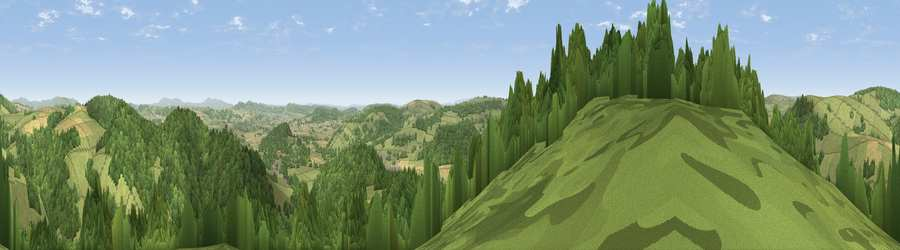

Viewpoint near Chapel Lawn
#4271 in England · top 12% of its area beats it · near Chapel Lawn · open accessWhere it is
The exact computed spot (SO 33225 74925). Click the marker for map links.
Public access: this spot lies on mapped open-access land (CRoW Act 2000) — you may roam here on foot. Computed from Natural England's CRoW access layer and OpenStreetMap rights of way — not the legal definitive map. Always verify locally.
The view, rendered

A 360° render of this exact spot computed from the terrain model, tree cover and land cover — summer colours, afternoon light, calibrated against photographs of famous viewpoints. Real trees, hedges and buildings will differ in detail.
The panorama
Grey silhouette: terrain skyline in each direction (720 bearings, Earth curvature and refraction included). Dashed green: skyline with trees (+15 m) and buildings (+8 m) as obstacles. Blue strip: how far the ground is visible on each bearing.
Where the view opens
Wedge length = distance to the farthest visible ground on that bearing (vegetation-aware). Rings at 10, 25 and 50 km.
What fills the view
54% woodland · 39% grassland · 6% cropland
Angular shares of the visible panorama (visual magnitude), not map area. Landscape diversity 0.39 (0–1 Shannon).
Key numbers
More beautiful places nearby
The staircase of upgrades: each row has a higher view potential than everything closer. Driving times are estimates from straight-line distance, calibrated against real road routing — check an actual route before setting out.
| Place | Direction | Drive | Score |
|---|---|---|---|
| Viewpoint near Stowe | WSW · 1 km | ~4 min | 74.4 |
| Viewpoint near Hopton Castle | NE · 3 km | ~8 min | 79.3 |
| Viewpoint near Leinthall Starkes | ESE · 12 km | ~23 min | 80.3 |
| Viewpoint near Pipe Aston | E · 13 km | ~23 min | 81.9 |
| Gatley Hill | ESE · 13 km | ~24 min | 82.6 |
| Viewpoint near Asterton | NNE · 15 km | ~27 min | 83.0 |
| Titterstone Clee | E · 26 km | ~42 min | 83.8 |
| The Lawley | NE · 28 km | ~44 min | 85.8 |
52.36829, -2.98216 · source: screening · position refined by local search. Computed location — check access rights before visiting.